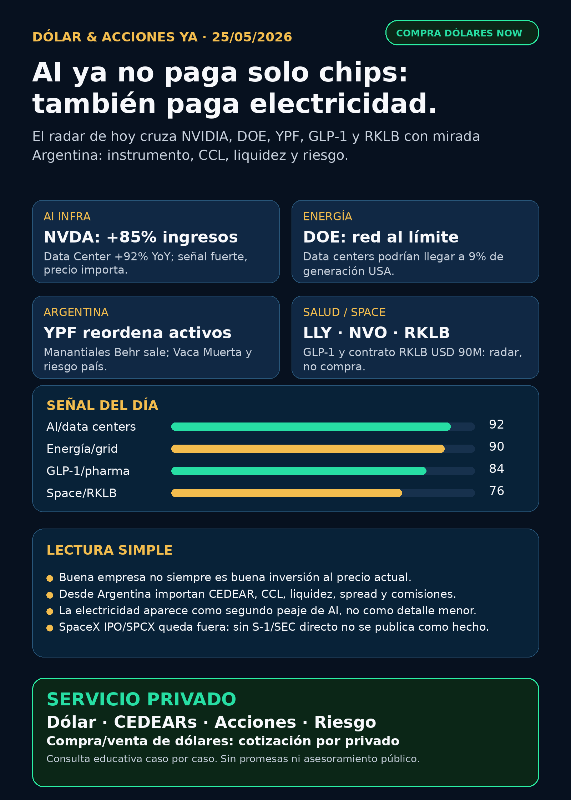

Simulación Uno Finanzas · Newsletter WhatsApp · 25 mayo 2026
Dólar & Acciones YA!
AI ya no paga solo chips: también paga electricidad, red y capital. Versión Argentina: CEDEARs, MEP/CCL, liquidez y riesgo antes que impulso.
DÓLAR · CEDEARs · ACCIONES · RIESGOServicio privado por mensaje. Cotización de dólar sujeta a confirmación al operar.

Escuchalo en 2 minutos
Audio descriptivo de Lola
Resumen hablado para WhatsApp: tesis, señales, riesgos y qué mirar desde Argentina.
Links útiles
## Lectura simple del día
La señal fuerte de hoy es que la inteligencia artificial ya no es solamente “chips”. NVIDIA sigue mostrando una demanda enorme de data centers, pero el cuello de botella grande aparece en el mundo físico: electricidad, red, permisos, capital, memoria, foundries y edificios.
Para una persona en Argentina, la lectura tiene que bajar a tierra: no alcanza con mirar el ticker de afuera. Hay que mirar el instrumento local —CEDEAR, ADR, acción local, ETF, bono o dólar—, la liquidez, el spread, el CCL implícito, las comisiones y el tamaño dentro de la cartera.
En criollo: buena empresa no siempre significa buena inversión al precio actual; y buen activo global no siempre significa buen instrumento para Argentina.
## Tesis central
El trade de AI se está ensanchando. La primera capa fue NVIDIA/chips. La segunda capa es energía: generación, transmisión, backup power, data centers, cooling y regulación. La tercera capa es cómo participa un inversor argentino sin comprar humo ni mezclar activos distintos.
Hoy el radar queda ordenado por valor educativo y calidad de evidencia, no como recomendación de compra.
## Señales educativas de hoy — orden de radar, no orden de compra
### 1) NVIDIA / NVDA — AI infra sigue fuerte, pero el precio importa
NVIDIA reportó Q1 FY2027 con ingresos de USD 81.6B, +85% interanual, y Data Center de USD 75.2B, +92% interanual. También anunció autorización adicional de recompra por USD 80B y suba del dividendo trimestral a USD 0.25.
- Estado: señal fortalecida para AI infra.
- Riesgo: valuación, concentración, expectativas muy altas, energía/data centers y supply chain.
- Fuente primaria: https://www.sec.gov/Archives/edgar/data/1045810/000104581026000051/q1fy27pr.htm
- Argentina: mirar CEDEAR/ratio/liquidez/spread antes de cualquier decisión humana.
### 2) Electricidad y data centers — el segundo peaje de AI
El Departamento de Energía de EE.UU. dice que la demanda eléctrica podría crecer 15–20% en la próxima década por AI/data centers, manufactura y electrificación. También marca que los data centers podrían llegar a 9% de la generación anual de EE.UU. para 2030, contra 4% en 2023.
- Estado: tesis estructural fortalecida.
- Riesgo: permisos, transmisión, costos, congestión de red, regulación y timing.
- Fuente primaria: https://www.energy.gov/oe/clean-energy-resources-meet-data-center-electricity-demand
- En criollo: no gana solo quien vende el chip; también puede ganar quien logra enchufar, enfriar y sostener el data center.
### 3) Riesgo operativo de red — DOE/PJM y backup generation
DOE emitió una orden de emergencia para que PJM pueda desplegar generación de backup en data centers y grandes instalaciones durante ola de calor/outages. La misma fuente cita más de 35 GW de backup generation disponible en EE.UU.
- Estado: señal de riesgo, no solo oportunidad.
- Riesgo: los data centers pueden ser clientes premium, pero también carga problemática para la red.
- Fuente primaria: https://www.energy.gov/articles/energy-secretary-issues-emergency-order-deploy-backup-generation-mid-atlantic-amid
### 4) Argentina energía — YPF entra por fuente primaria
YPF informó vía SEC 6-K el cierre de la transferencia del 100% de la concesión convencional Manantiales Behr y transporte asociado a Pecom 51% y San Benito Upstream 49%. La lectura educativa: YPF sigue reordenando portfolio y soltando activos convencionales para concentrar capital donde ve más valor estratégico.
- Estado: radar local educativo.
- Riesgo: precio, riesgo país, regulación, deuda, petróleo/gas y timing político.
- Fuente primaria: https://www.sec.gov/Archives/edgar/data/904851/000155485526001098/MainDocument.htm
- Argentina: YPF, Pampa, TGS, Central Puerto, Edenor y Transener quedan en seguimiento por energía/grid, pero no se elevan a compra sin precio, liquidez y fuente por compañía.
### 5) Pharma / salud — Lilly acelera GLP-1; Novo responde por vía oral
Eli Lilly reportó que retatrutide 12 mg logró pérdida promedio de 70.3 lb / 28.3% a 80 semanas en TRIUMPH-1; en una extensión BMI≥35 llegó hasta 85.0 lb / 30.3% a 104 semanas. EMA/CHMP recomendó ampliar Wegovy para agregar una tablet oral diaria como alternativa a la inyección semanal.
- Estado: salud/GLP-1 sigue en radar real.
- Riesgo: aprobación final, tolerabilidad, precio, supply, competencia, patentes y expectativas.
- Fuentes primarias: https://investor.lilly.com/news-releases/news-release-details/lillys-triple-agonist-retatrutide-delivered-powerful-weight-loss y https://www.ema.europa.eu/en/news/meeting-highlights-committee-medicinal-products-human-use-chmp-18-21-may-2026
- En criollo: GLP-1 no es “pastilla mágica bursátil”; es un mercado gigante con ensayos, regulación y competencia durísima.
### 6) FDA warning — separar medicamento aprobado de copias dudosas
FDA publicó warning letter contra Harbin Jixianglong Biotech por problemas CGMP/API y relabeling/repackaging de semaglutide. Esto sirve para explicar que no todo lo que dice “semaglutide” tiene la misma calidad, aprobación o riesgo sanitario.
- Estado: riesgo regulatorio a vigilar.
- Fuente primaria: https://www.fda.gov/inspections-compliance-enforcement-and-criminal-investigations/warning-letters/harbin-jixianglong-biotech-co-ltd-723330-05012026
### 7) Space / RKLB — más defensa y space systems
Rocket Lab recibió contrato de USD 90M de U.S. Space Force Space Systems Command para diseñar, fabricar, integrar, testear y operar dos satélites GEO con payload Heimdall de space domain awareness.
- Estado: señal fortalecida para RKLB como space systems/defensa, no solo launch.
- Riesgo: ejecución, márgenes, cash burn, competencia, dilución y volatilidad del sector space.
- Fuente primaria: https://www.globenewswire.com/news-release/2026/05/22/3299858/0/en/rocket-lab-awarded-90m-contract-to-build-geo-satellites-hosting-space-domain-awareness-payload-for-u-s-space-force.html
### 8) Private markets — DXYZ y RVI sirven para aprender, no para perseguir FOMO
DXYZ informó NAV USD 24.56 por acción al 31/03/2026 y exposición a Anthropic, SpaceX vía SPVs y OpenAI, además de 31.4% en money market. RVI es un fondo cerrado de Robinhood Ventures Fund I: el prospecto advierte limited history, iliquidez, concentración, private vehicles/SPVs y riesgo de cotizar con premio o descuento contra NAV.
- Estado: radar educativo de private AI/SpaceX.
- Riesgo: NAV/premium/descuento, liquidez, holdings reales, acceso desde Argentina y estructura del fondo.
- Fuentes primarias: https://www.sec.gov/Archives/edgar/data/1843974/000157587226000288/dxyz100_424b3.htm y https://www.sec.gov/Archives/edgar/data/2085091/000162828026024942/ck0002085091-20260413.htm
- Importante: SpaceX IPO/SPCX quedó NO VERIFICADO en fuente primaria. No lo publico como hecho.
## Watchlist base — seguimiento rápido
- **NVDA:** señal fortalecida por resultados y data center scale; riesgo de valuación/energía.
- **RKLB:** contrato USD 90M refuerza space systems/defensa; sigue especulativa.
- **GOOGL/GOOG:** cloud, TPUs, datos, distribución y Waymo; hoy sin catalizador primario mayor que energía/NVDA/RKLB.
- **PLTR:** software operativo AI en radar; no hubo señal primaria nueva más fuerte en este corte.
- **TSM / ASML / MU:** moat estructural de foundry, litografía y memoria/HBM; seguir, pero sin noticia superior hoy.
- **AAPL:** ecosistema fuerte; no elevar como AI moat sin evidencia nueva.
- **HOOD:** vigilar, pero no confundir con RVI; RVI es fondo cerrado.
- **TSLA:** autonomy/robotaxi/energy en radar, pero sin fuente primaria suficiente hoy para titular.
- **Gold / GLD / GOLD / B:** instrumento ambiguo; resolver exacto antes de comentar precio.
- **RVI:** fondo cerrado ilíquido/private markets; no operating company.
## Autonomy / physical AI
Waymo entra por Alphabet; Tesla mezcla autos, energía, robotaxi y robotics; Uber puede ganar o perder según quién capture la distribución; Amazon/Zoox y Joby siguen como watchlist de mundo físico/regulatorio. Hoy no hubo señal primaria más fuerte que AI infra, energía, pharma y RKLB.
## Capa Argentina: cómo usar esto sin confundirse
- **CEDEAR:** forma local de exponerse a una acción externa; puede tener ratio, liquidez, spread, comisiones y CCL implícito.
- **MEP/CCL:** tipos de cambio financieros; pueden mover tu resultado aunque la acción afuera quede igual.
- **Spread:** diferencia entre compra y venta; si es grande, entrar/salir sale caro.
- **Moat:** ventaja difícil de copiar. En AI puede ser chip, software, energía, datos, escala o regulación.
- **Capex:** plata enorme que una empresa tiene que poner para construir infraestructura.
- **GLP-1:** familia de tratamientos metabólicos/obesidad; mercado gigante pero regulado.
Si el feed automático de dólar no está fresco, no conviene publicar número como si fuera cotización oficial del momento. La cotización operativa se confirma por privado al operar.
## Red flags / hype para ignorar
- “AI sube todo”: falso. Hay ganadores, cuellos de botella y precios caros.
- “SpaceX IPO/SPCX ya es hecho”: no verificado con S-1/SEC directo en este run.
- “GLP-1 es compra segura”: no. Depende de ensayos, aprobación, supply, precio y competencia.
- “Energía argentina es obvia”: no. Puede tener negocio real y riesgo país/regulatorio fuerte.
- “CEDEAR = acción afuera”: no exactamente. Hay CCL, ratio, liquidez, spread y comisiones.
## Qué mirar después
1. NVIDIA: próximos comentarios de capacidad, energía, supply y márgenes.
2. DOE/PJM: si el stress de red se convierte en más inversión o más restricciones.
3. Energía local: YPF/Pampa/TGS/CEPU con fuentes primarias, precio y liquidez.
4. Lilly/Novo: aprobación, tolerabilidad, supply y pricing de GLP-1.
5. RKLB: nuevos contratos, márgenes y financiación.
6. DXYZ/RVI: NAV, premium/descuento, volumen y exposición real a private AI/SpaceX.
## Servicio privado
Si querés comprar o vender dólares, mirar CEDEARs, acciones o armar una estrategia financiera con riesgo, monto y horizonte claros, escribime por privado y lo vemos caso por caso. Cotización de dólar sujeta a confirmación al momento de operar.
Este reporte gratuito es informativo y educativo. No es asesoramiento financiero personalizado, no es recomendación de compra/venta y no promete resultados.
Compra/venta de dólares y consulta privada
Si querés comprar o vender dólares, mirar CEDEARs, acciones o ordenar una estrategia financiera personal, escribime por privado y lo vemos caso por caso.
Reporte gratuito informativo. No es asesoramiento financiero personalizado ni promesa de resultado.